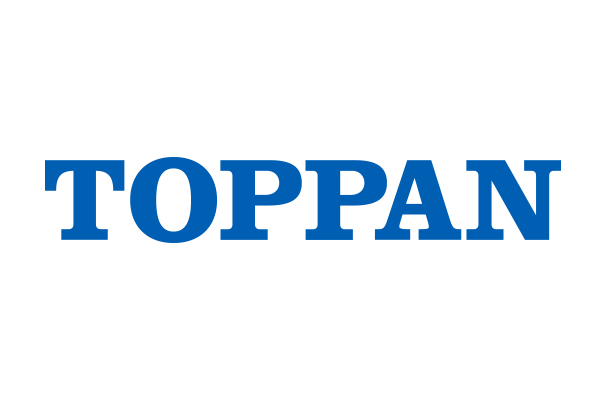
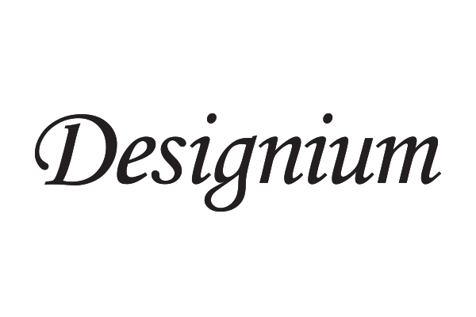
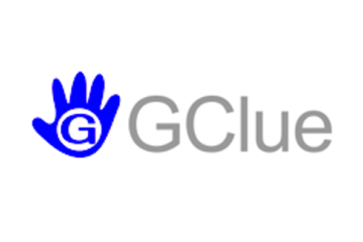
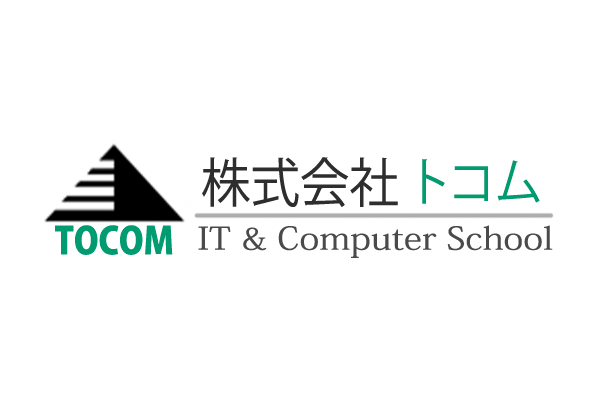
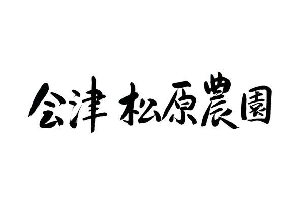
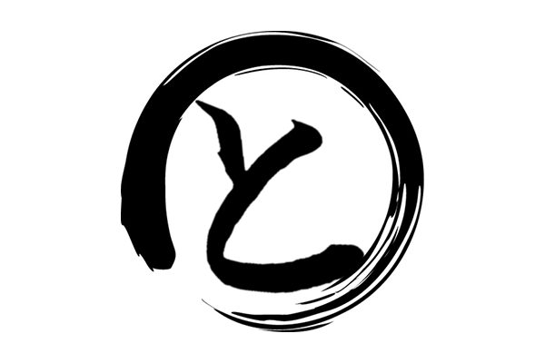
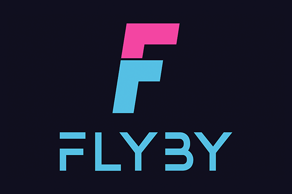
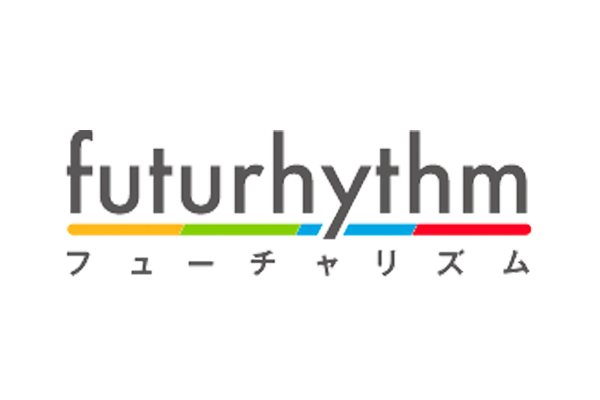
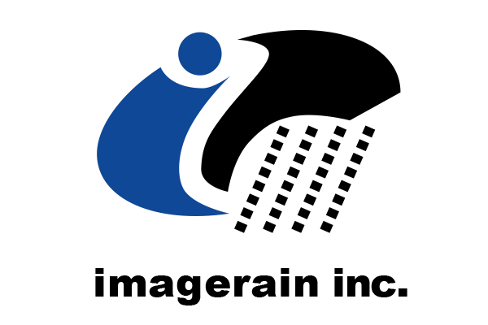

※ 5月8日19時から申込みできます。
参加申し込み2023年6月18日（日）福島県会津若松市 会津大学で「福島でかドージョー2023（会津大学 開学30周年記念イベント）」開催決定！
でかドージョーについて
about deca dojo
福島県内のCoderDojoが集まって、プログラミングを楽しむお祭りです。
でか（Deca）は、日本語で「大きい」を意味する「でかい」と、10倍を表す単位 [deca] をかけてます。
いつもと違う大きな会場で、みどころ10倍！楽しさ10倍！
プログラミングに興味のある子どもたち、ニンジャのみんな！参加まってるよ！
詳細
Detail
- 日にち
- 2023年６月18日 日曜日
- 場所
- 会津大学 講義棟
〒965-8580 福島県会津若松市一箕町鶴賀 - 地図
- Google Map
- 時間
- 10:00開催（9:30開場）
- 対象
- 福島県内の小学生・中学生・高校生とその保護者
- 参加費
- 無料
当日はこんなことするよ
here's what we'll do on the day
ポケモンワークショップ
プログラミングでポケモンをうごかしてみよう
micro:bit カーリング
micro:bit マイコンをプログラミングしてカーリング対決
音楽とプログラミング
Scratchで作曲・アレンジに挑戦。パソコンで音楽を作ろう！
現役プログラマーによる講演
憧れの職業「ゲームプログラマー」になるための秘訣を伝授
成果発表会
子どもたちがCoderDojoで学んできた成果を大講義室で発表
詳細はこちらのホームページに随時更新していきます。
CoderDojo（コーダードージョー）とは
About Coderdojo
CoderDojoは子供たちが自主的にプログラミングを学ぶ場を提供する無償の取り組みです。
地域の企業に勤めているITエンジニアや有志達がボランティアで運営しています。
世界で2000、国内にも220以上の活動拠点があります。
※ 5月8日19時から申込みできます。
参加申し込み- 学内駐車場が利用可能
- 小学生は保護者同伴
- 学校敷地内に昼食を買える場所がありません
- お昼を食べる場所として食堂を開放しますが、飲食の提供はおこなっていません
共催
全国高等学校パソコンコンクール実行委員会
スポンサー
Sponsor
DECA DOJOは多くの企業・個人の方にご協力いただき運営しています。多大なるご協力ありがとうございます。
- 
- 
- 
- 
- 
- 
- 
- 
- 
行動規範
Code of Conduct
福島でかドージョー2023は、下記の行動規範に基づき活動します。
- CoderDojoとは、子どもたちに「プログラミングを学ぶ場を提供するボランティア活動」であり、活動の中心は子どもたちであることを理解します。
- すべての参加者（子ども、メンター、保護者、その他関係者）に対して礼儀正しく振舞い、決して尊大な態度をとりません。
- すべての参加者と仲良く活動し、差別的・否定的な言動を行いません。
- 会場内での安全に配慮し、福島でかドージョーが安全かつ円滑に開催できるように行動します。
- CoderDojoの趣旨に賛同するスポンサーが会場を提供していることを理解し、会場の設備・備品等の扱いに注意するとともに場内を清潔に保つように努めます。
- CoderDojoの活動において知り得た、参加者の個人情報を、本人の同意なしに他人に提供したり、公開したりしません。
- CoderDojoにおいて、商業的・政治的・宗教的な宣伝および勧誘を一切行いません。ただし、商業的なものであって、CoderDojoの活動に即したものであると考える場合は、事前に主宰者の承諾を得ることを条件に、告知できるものとします。
- 上記の内容に反する言動・行動を見かけたときには、ただちに主宰者に報告し、適切な対応を行います。
Presented by 福島県のCoderDojo